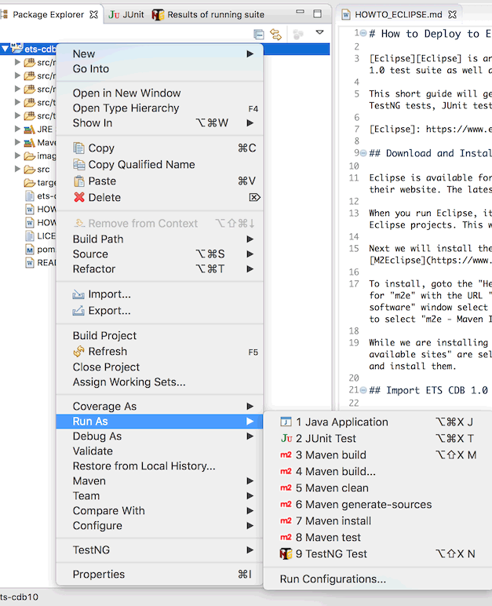
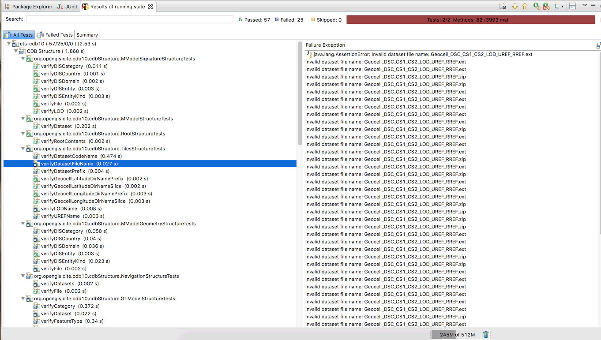
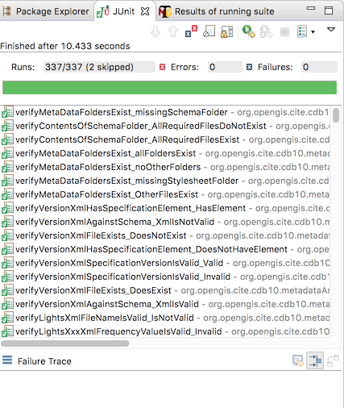

How to Deploy to Eclipse IDE
Eclipse is an Integrated Development Environment for building applications and tools. It can be used to run the ETS CDB 1.0 test suite as well as develop and extend the test suite.
This short guide will get you set up with Eclipse and the ETS CDB 1.0 repository for Desktop development. You will be able to run TestNG tests, JUnit tests, and modify the test suites.
Download and Install Eclipse
Eclipse is available for Windows, MacOS, and Linux. If you do not already have it, download the latest version of the IDE from their website. The latest version as of this guide is “Photon”.
When you run Eclipse, it may prompt you to create or select a workspace. If it asks, then create a new folder for storing your Eclipse projects. This will include the ETS CDB 1.0 in a moment.
We will start by installing the TestNG plugin. To install, goto the “Help” menu and select “Install new software”. In the window, select the “Add” button and create a new entry for “TestNG” with the URL http://beust.com/eclipse. Save the new repository, and back in the “Install new software” window select the “filter” field and type testng. After a few seconds, some results will be shown and you will only need to select the “TestNG” and “TestNG M2E Integration” packages, and install them. Eclipse will prompt you to restart the application after installing, go ahead and do that.
Import ETS CDB 1.0
Note: Previous instructions used the Maven Eclipse Git connector to handle the import. This does not seem to work with Eclipse Photon in Jan 2019, so the following procedure is used instead.
Go to the ETS CDB 1.0 repository and click the green “Clone or download” button and select “Download ZIP”. Once downloaded, extract the ZIP to its own folder.
From the “File” menu, select “Import”. Under the “Maven” folder, select the “Existing Maven Projects” item. In the next window, select your Downloads directory as your “Root Directory” (or the directory containing the ETS CDB 1.0 you extracted). In the “Projects” list a new entry should automatically appear; select it and click the “Finish” button.
In the main Eclipse window, close the “Welcome” tab and the Package Explorer in the left pane will now contain “ets-cdb10”.

Try using Maven to build the project dependencies by right-clicking (or control-clicking) the project and going down to “Run As” and selecting “Maven Install”. The Eclipse Console should automatically open and show the Maven install progress, which should complete in under a minute.
Maven Error Messages
If there are error messages in the console, you may have to change the Java version used by Eclipse. Select the ets-cdb10 project in the Package Explorer list, and go to the “Project” menu and select “Properties”.
In the new window, select “Java Build Path”, then the “Libraries” tab. Select “JRE System Library” and click “Edit…”. Select “Alternate JRE”, and in the list be sure to select one of the following:
- Java 8 (1.8.0)
- Java 10 (10.0)
Ideally, they are JDK installations and not JRE installations. You can download the JDK for free from Oracle or from OpenJDK. Once installed, they can be added to Eclipse by going to the same window and selecting “Installed JREs…” and in the “Preferences (filtered)” window selecting “Search…” and selecting your Java installation directory.
Note that I have tested the ETS with OpenJDK 11 and it does not work yet.
Run TestNG on included CDB
A sample CDB is included in the test suite for verifying the test methods. You can try running TestNG with Eclipse. From the “Run” menu, select “Run Configurations”. In the left pane, a list of run and test types is listed. Right-click (or control-click) TestNG and select “New”. In the configuration window, name it “CDB10 TestNG”. Select the “Suite” radio button and click “Browse” to select a TestNG XML configuration file at src/main/resources/org/opengis/cite/cdb10/testng.xml. Leave the other tabs and settings at their default values. Click Apply to save the configuration, and then select “Run” to try TestNG.
A TestNG window may pop up with the results. If no results window is shown, goto the “Window” menu, “Show View”, then “Other”. In the pop-up window select “TestNG”.
The results will show some failures, as the sample CDB included with the test suite contains some “dummy” directories that do not pass the conformance tests.
Run TestNG on a custom CDB
If you have your own CDB that you would like to test with the test suite in Eclipse, you will need to create a new testng.xml file with the following contents:
<?xml version="1.0" encoding="UTF-8"?>
<!DOCTYPE suite SYSTEM "http://testng.org/testng-1.0.dtd">
<suite name="ets-cdb10" verbose="0" configfailurepolicy="continue">
<parameter name="iut" value="path/to/CDB" />
<parameter name="ics" value="1,2" />
<listeners>
<listener class-name="org.opengis.cite.cdb10.TestRunListener" />
<listener class-name="org.opengis.cite.cdb10.SuiteFixtureListener" />
<listener class-name="org.opengis.cite.cdb10.TestFailureListener" />
</listeners>
<test name="CDB Structure">
<packages>
<package name="org.opengis.cite.cdb10.cdbStructure" />
<package name="org.opengis.cite.cdb10.cdbStructure.GSModel" />
</packages>
</test>
<test name="Metadata And Versioning">
<packages>
<package name="org.opengis.cite.cdb10.metadataAndVersioning" />
</packages>
</test>
</suite>
Change the iut to point to the directory of your CDB. The ics is “1” for conformance level 1, “2” for conformance level 2, and “1,2” for both conformance levels. Save the file anywhere, it does not need to be in the repository.
In Eclipse, open the Run Configuration window again and create a new TestNG configuration. For the Suite, select “Browse” and then “File System”, and choose the testng.xml file you created. (It can actually be named anything you want, as long as its an XML file.)
The test results will then be shown in the TestNG results window. From here you can see which test methods passed and which methods failed, as well as jump to the test suite code to see how the failure was generated.

Run JUnit Tests
This test suite contains JUnit tests for verifying the TestNG test methods. It may seem odd to test a test, but it is much easier to develop and verify a test method if you have a framework for setting up different test cases. JUnit does this by letting you set up a failure scenario and making sure the TestNG method correctly fails that scenario.
The JUnit tests are the same tests than Maven will run when compiling or packaging. You can run the JUnit tests inside Eclipse by selecting the project, going to the “Run” menu, to “Run As” and selecting “JUnit Test”. You can open a JUnit results window similar to the TestNG results window, if you want to filter the passed/failed tests.
